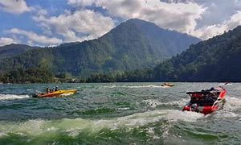

Share :
Telaga Sarangan, juga dikenal sebagai Telaga Pasir adalah telaga alami yang berada di ketinggian 1.200 meter di atas permukaan laut dan terletak di lereng Gunung Lawu, Kecamatan Plaosan, Magetan.[1] Telaga ini berjarak sekitar 16 kilometer arah barat Kota Magetan. Telaga ini luasnya sekitar 30 hektare dan berkedalaman 28 meter.Dengan suhu udara antara 15 hingga 20 derajat Celsius. Telaga Sarangan mampu menarik ratusan ribu pengunjung setiap tahunnya. Telaga Sarangan adalah objek wisata andalan Magetan Di sekeliling telaga terdapat dua hotel berbintang, 43 hotel kelas melati, dan 18 pondok wisata.Di samping puluhan kios cendera mata,pengunjung dapat pula menikmati indahnya Sarangan dengan berkuda mengitari telaga,atau mengendarai kapal cepat.Fasilitas objek wisata lainnya pun tersedia,misalnya rumah makan, tempat bermain,pasar wisata,tempat parkir,tempat ibadah,dan taman.
Keberadaan 19 rumah makan di sekitar telaga menjadikan para pengunjung memiliki banyak alternatif pilihan menu.Demikian pula keberadaan pedagang kaki lima yang menawarkan berbagai suvenir telah memberikan kemudahan kepada pengunjung untuk membeli oleh-oleh. Hidangan khas yang dijajakan di sekitar telaga adalah sate kelinci. Magetan juga tertolong dengan adanya potensi industri kecil setempat yang mampu memproduksi kerajinan untuk suvenir,misalnya anyaman bambu,kerajinan kulit,kerajinan sepatu,dan produk makanan khas seperti emping melinjo dan lempeng (kerupuk puli,yaitu kerupuk dari nasi).Telaga Sarangan juga memiliki layanan jasa sewa perahu dan becak air.Ada 51 perahu motor dan 13 becak air yang dapat digunakan untuk menjelajahi telaga.Telaga Sarangan memiliki beberapa kalender event penting tahunan,yaitu labuh sesaji pada Jumat Pon bulan Ruwah,liburan sekolah di pertengahan tahun,Ledug Sura 1 Muharram,dan pesta kembang api di malam pergantian tahun.